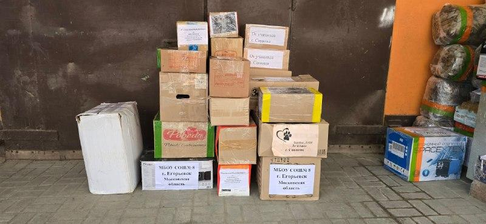
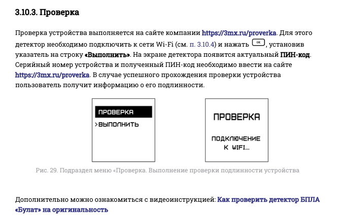
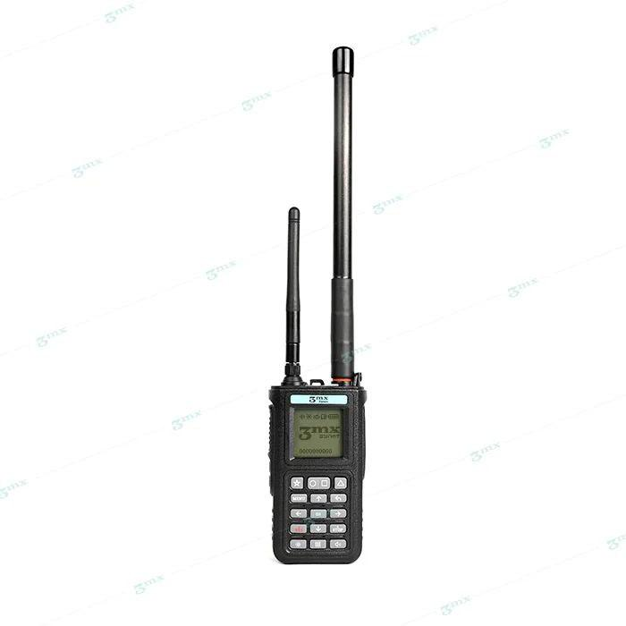
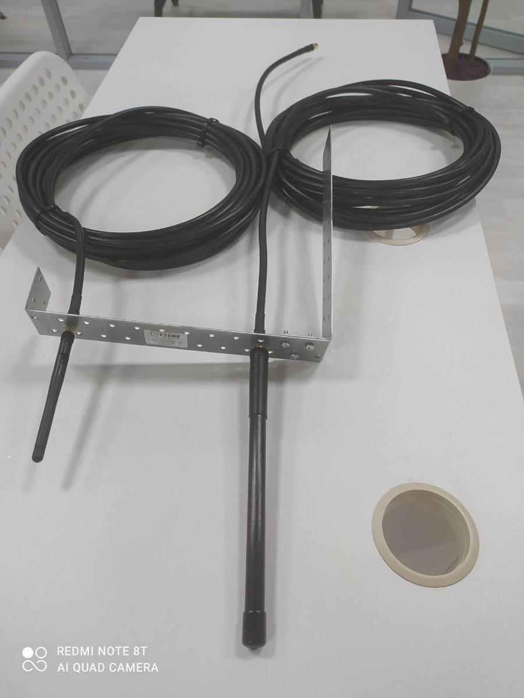
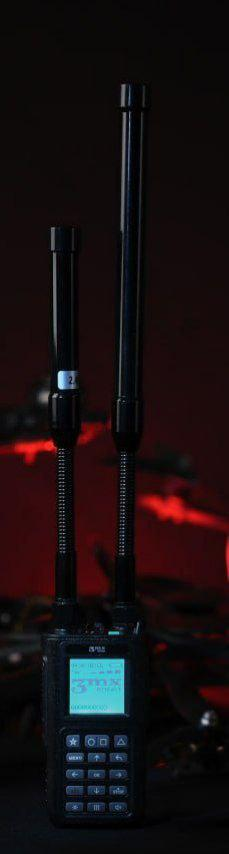
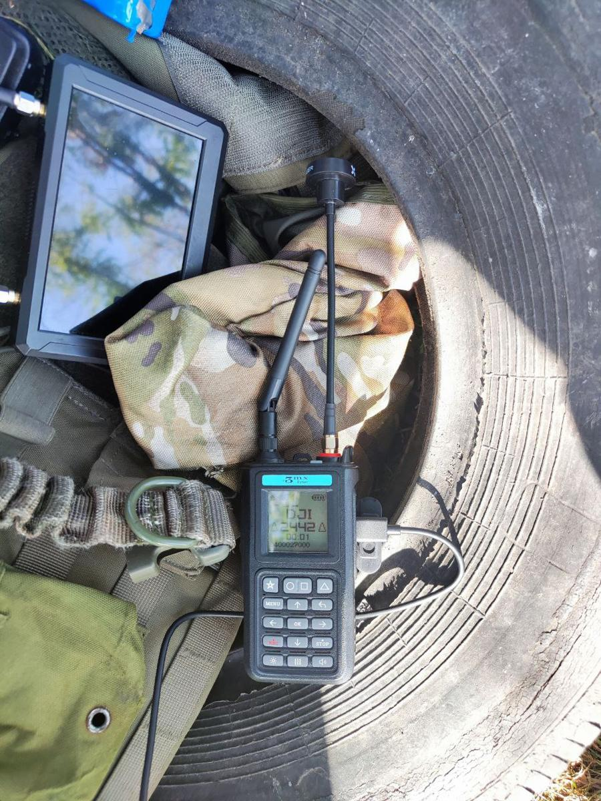
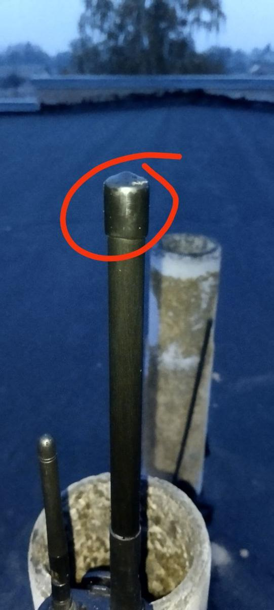

Portable UAV detector made by ООО «Тримикс», a company
under sanctions. It is sold on marketplaces and through dealers, bought by state agencies under
3 contracts, and handed to front-line units by a foundation that works with ЦБСТ.
A document shows it
Reported: the party's own word or the press
Not documented
Numbers refer to the sources at the end.
ЦБСТ and its events
Hub
АНО «ЦБСТ»Centre for Unmanned Systems & Technologies
Each picture is evidence only for what its caption says is visible. Faces of people not named in this investigation are blurred.
Handovers, as published by the donor
Published by Фонд «Наша Правда»Two servicemen in multicam with rifles in a snowy wood; their faces are covered.4011.02.2025
Published by Фонд «Наша Правда»Three servicemen with rifles standing in snow behind two black hard cases; faces covered.4011.02.2025

Published by Фонд «Наша Правда»Stacked cardboard boxes and a white crate beside a van, several with printed labels.4119.02.2025
Published by Фонд «Наша Правда»A man in camouflage in front of a truck loaded with boxes; his face is blurred by the publisher.4119.02.2025
Published by Фонд «Наша Правда»A soldier with a rifle in a dim wooden storeroom stacked with boxes; face covered.4119.02.2025
Published by Фонд «Наша Правда»Four men, three in camouflage and one in olive clothing, in front of a covered truck; a yellow minibus behind.4203.03.2025
Published by Фонд «Наша Правда»Several people loading a green crate into a vehicle at night.4203.03.2025
Published by Фонд «Наша Правда»A quad bike with men working around it and gear on the ground.43Video. Original on t.me/nashapravdafond/422. Not archived.10.04.2025
Published by Фонд «Наша Правда»A row of men in camouflage and one man in a blue jacket, standing among trees.44Video. Original on t.me/nashapravdafond/444. Not archived.06.06.2025
Published by Фонд «Наша Правда»Three armed men in camouflage beside cardboard boxes and a green hard case.4509.06.2025
Published by Фонд «Наша Правда»Three men beside the open boot of a car loaded with equipment.4629.07.2025
Published by Фонд «Наша Правда»Three men in camouflage at night under camouflage netting; faces blurred by the publisher.4708.08.2025
Published by Фонд «Наша Правда»Two men in body armour beside unpacked boxes and equipment on the ground; faces blurred by the publisher.4813.08.2025
Published by Фонд «Наша Правда»Two men in camouflage in front of a military truck, each holding a box or case; faces blurred by the publisher.4913.08.2025
Published by Фонд «Наша Правда»Three armed men in helmets and face coverings in front of a log dugout wall.5024.10.2025
Published by Фонд «Наша Правда»Seven men in olive and camouflage clothing posing in front of a quad bike and boxes at dusk.5101.04.2026
Published by Фонд «Наша Правда»Seven men posing beside a black off-road motorcycle and a pickup truck.5101.04.2026
Published by Фонд «Наша Правда»Cardboard boxes and black hard cases stacked in and beside a truck.5224.04.2026
Published by Фонд «Наша Правда»Two men in face coverings in front of a trailer loaded with boxes.5224.04.2026
Published by Фонд «Наша Правда»Three men in a walled yard with motorcycles, a quad bike, a trailer and boxes.5319.05.2026
Published by the maker and its dealers
Published by ООО «ПОКРОВ»Product card for the «Булат» v.4 (3MX) handheld detector, with its case and antennas, as shown on the company's own site pokrovsystem.ru (captured 20.09.2026).7

Published by ООО «Тримикс»Manual page §3.10.3 «Проверка»: how to check the detector's authenticity at 3mx.ru/proverka with a serial number and PIN code.5418.12.2024
Posted by buyers and other third parties
Posted by a third partyA marketplace app's product page for «Портативный всенаправленный детектор БПЛА 3MX Булат v.4» at 144 279 ₽ (234 600 ₽ crossed out), with a smartwatch-style unit beside the detector.5501.10.2024

Posted by a third partyProduct shot of a handheld detector with two whip antennas and a keypad, on a white ground with a faint repeated watermark.5602.10.2024

Posted by a third partyHome-made antenna mount: coiled cable and a metal bracket with a mounted antenna on a table.5702.10.2024

Posted by a third partyA handheld detector with a lit screen and long antennas, photographed in the dark.5803.10.2024

Posted by a third partyA handheld detector with an antenna, lying in a vehicle tyre next to a small monitor and camouflage gear outdoors. No people in frame.5904.10.2024

Posted by a third partyClose-up of an antenna whose end cap is missing, circled in red.6004.10.2024
Posted by a third partyA boxed wrist unit held in a hand; the box reads «ТАИР» and «Устройство оповещения», and the pictured screen reads «БУЛАТ 4» and «ПОИСК БПЛА».6105.10.2024
What this does not show
No document records ООО «Тримикс» as a formal member of a ЦБСТ programme. Its link to ЦБСТ rests on the posts and statements cited on its card.
2 further marketplace listings without an archived copy of the page are left out.
No document shows where Фонд «Наша Правда» obtained «Булат». The line from the product to the donor is dotted for that reason.
The 16 handovers are Фонд «Наша Правда»'s own reports. None is confirmed by the receiving unit or an independent source, and the post date is not always the handover date.
Every company, listing, contract and handover here comes from an archived document. Listings
and handovers are as of the dates shown; 4 listings and 16 handovers are on file.
Sources
Ukraine's defence intelligence (ГУР) War & Sanctions portal, 30.09.2026.